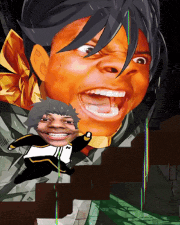
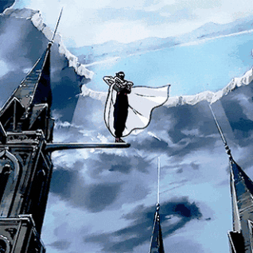

Para farmar aura com eficiência e alcançar o verdadeiro main character energy, o segredo é dominar a arte de fazer o extraordinário parecer completamente natural. Você acumula pontos valiosos ao manter a compostura absoluta durante o caos, resolver problemas complexos no silêncio e demonstrar habilidades impressionantes sem precisar de plateia, ouvindo sempre mais do que fala.
A regra de ouro, no entanto, é evitar o efeito reverso: no segundo em que você força a barra por atenção ou busca "biscoito", você toma um -1000 de aura instantâneo. O verdadeiro farm exige um timing impecável, postura confiante e a consciência de que a fonte mais inabalável de aura é, no fim das contas, a pura autenticidade.

